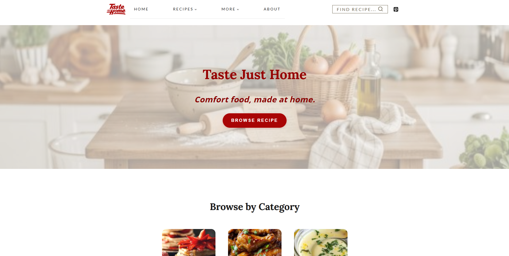
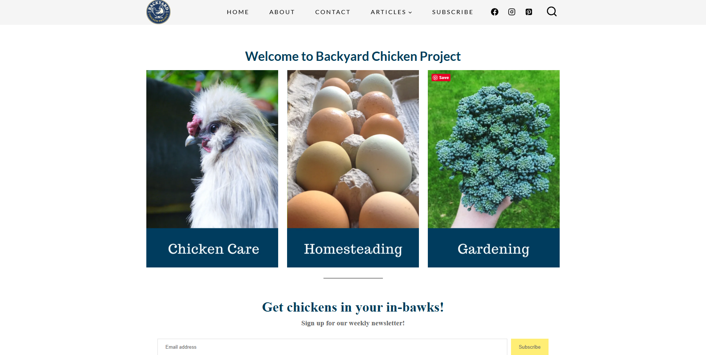
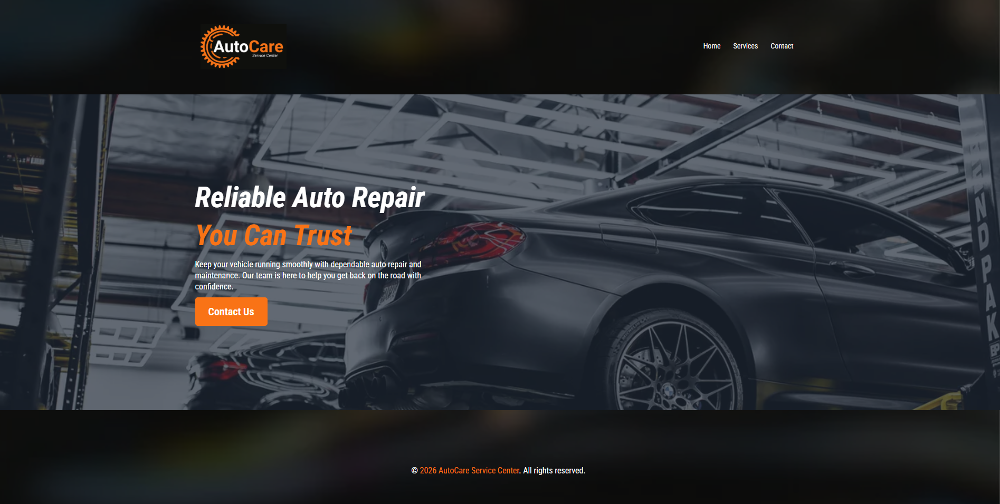
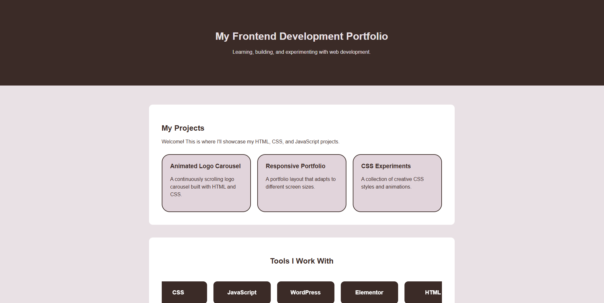

FRONTEND DEVELOPMENT PORTFOLIO
Building for the web, one project at a time.
Exploring frontend development, creating responsive websites, and turning ideas into functional web experiences.
Explore My ProjectsFeatured Projects
A collection of website projects and development experiments.

Taste Just Home
Recipe Content Creation & WordPress Support

Backyard Chicken Project
WordPress Content Cleanup & Website Maintenance

AutoCare Service Center
Self-Directed Website & Automation Demo

Frontend Experiments
HTML, CSS & JavaScript Projects
About Me
I'm building my skills in frontend development through hands-on projects and continuous learning.